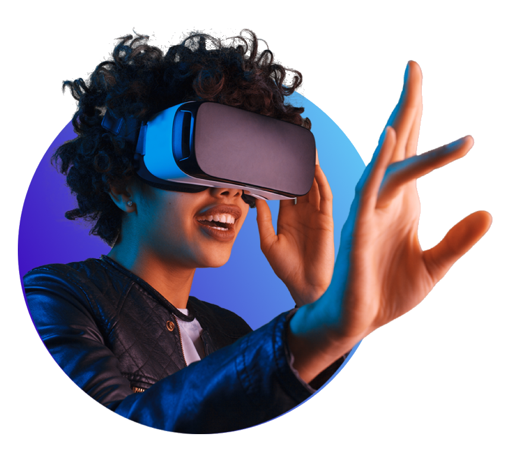
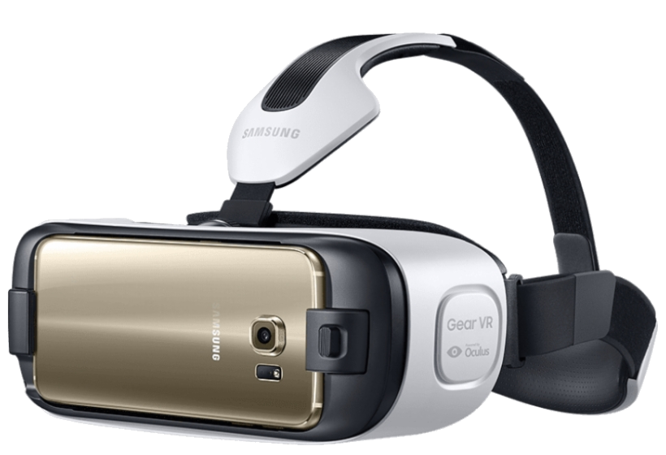
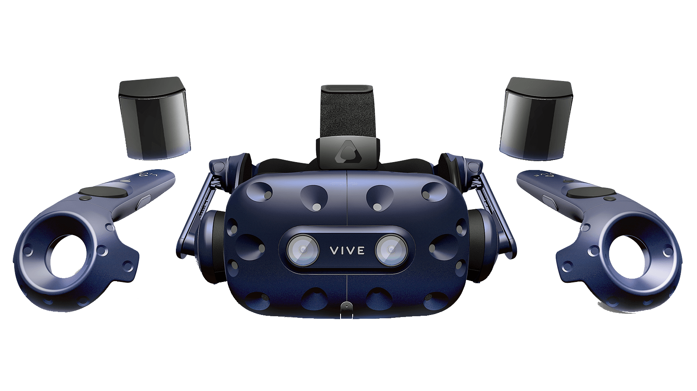
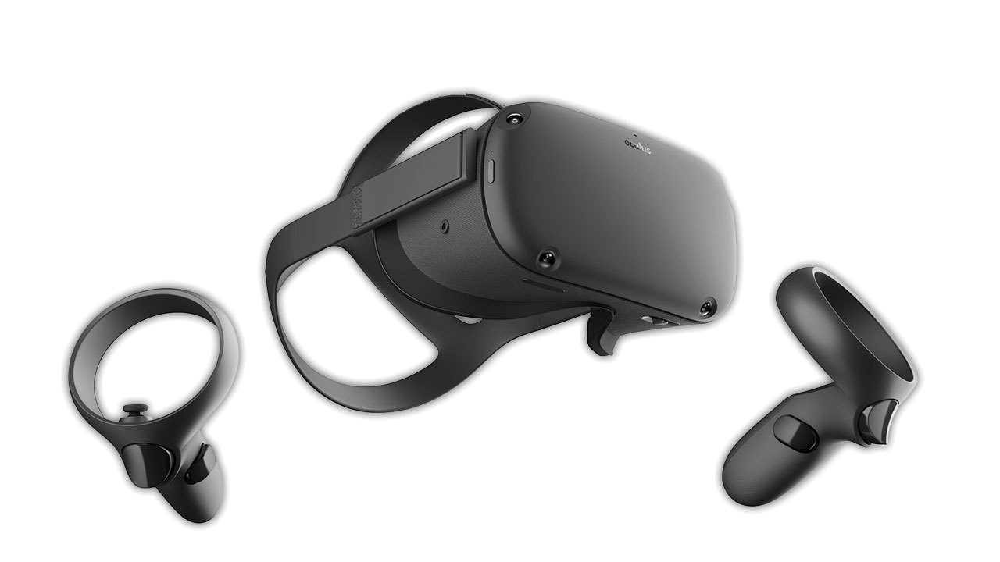
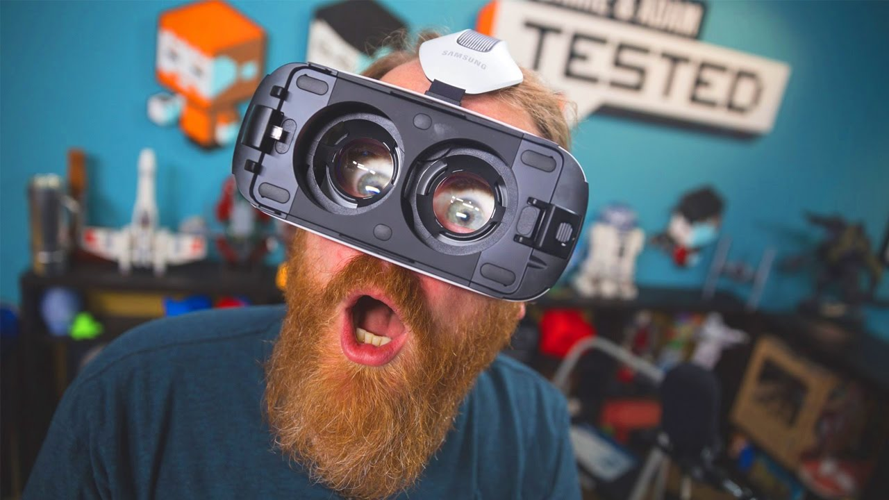

Что такое виртуальная реальность?

Виртуальная реальность (Virtual Reality, VR) — искусственный мир (объекты и субъекты), который создаётся с помощью технических устройств. Неотъемлемой частью VR является воздействие на основные органы чувств человека: зрение, слух, обоняние, осязание и другие. В отличии от физической реальности, которая является внутренним состоянием индивидуума, виртуальность – это процессуальное взаимодействие между материально-техническими процессами и психикой человека.
Существует несколько типов очков виртуальной реальности
Мобильная
Представляет собой связку смартфона и держателя с линзами, называемого гарнитурой: Google CardBoard, Samsung Gear VR, YesVR.


Стационарная
Действует с помощью компьютера и вспомогательного устройства: HTC Vive, Oculus Rift, Playstation VR.
Автономная
Работает благодаря подходящим очкам виртуальной реальности и ОС: Oculus Quest, Sulon Q, DeePoon, AuraVisor.

Где применяется виртуальная реальность
Сфера использования VR широка, но преимущественно это игры: гонки, квесты и головоломки, ужасы и так далее. С помощью этой реальности можно также посещать выставки и разные мероприятия, присутствовать при значимых событиях, путешествовать.
Отдельную часть занимает обучение, в частности — с устройствами и механизмами. VR активно применяется для водителей, пилотов, диспетчеров, машинистов. Виртуальная реальность помогает преодолеть барьер в экстремальных видах спорта, справиться со страхами.
Сложно переоценить её значение в медицине: с ней обучаются трудным в исполнении операциям и даже успешно проводят их в жизни благодаря дополнительным устройствам. Она помогает и в научных исследованиях, экспериментах.
Плюсы и минусы виртуальной реальности
- Возможность полностью окунуться в интерактивное измерение.
- Получение новых эмоций.
- Профилактика стресса.
- Создание электронных информационных и обучающих ресурсов.
- Проведение конференций.
- Создание объектов культурного наследия.
- Возможность визуализации различных объектов и физических явлений.
- Возможность для каждого перейти на новый уровень развлечений.
- Зависимость.
- Еще один явный минус: виртуальная реальность и ее психологическое воздействие на человека – оно далеко не всегда бывает позитивным, так как есть риск слишком сильно погрузиться в виртуальным мир, что иногда влечет за собой проблемы в социальной и других сферах жизни.
- Высокая стоимость устройств.
VR – вредно это или нет?

Пока что можно отметить, что никаких глобальных исследований в этой области не проводилось, однако первые выводы сделать уже можно. Так как VR еще только-только разрабатывается (и это действительно так), у многих могут появляться неприятные ощущения при продолжительном использовании этой технологии. В частности, человек будет ощущать головокружение и тошноту.
Пока что нет никаких доказательств того, что VR отрицательно действует на зрение. Отрицательный эффект, несомненно, есть, однако он не настолько велик, чтобы бить тревогу. Поэтому пока неизвестно, виртуальная реальность, что это такое – вред или польза.